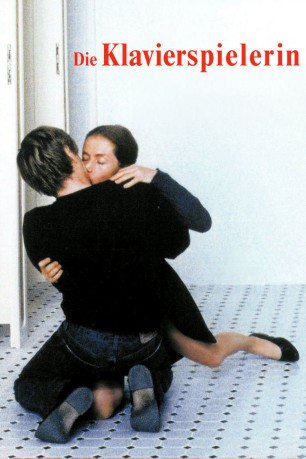
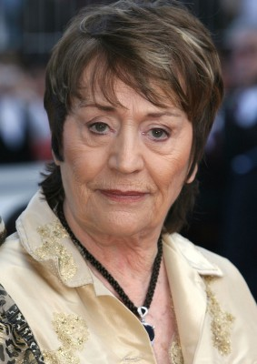

#7514 Die Klavierspielerin
Alternativ: The Piano Teacher (Englischer Titel)
 
 IMDB-Wertung: 7.5 / 10
IMDB-Wertung: 7.5 / 10  Metascore: 0
Metascore: 0 
Erika Kohut gibt Klavierunterricht am Konservatorium in Wien. Sie ist Anfang vierzig und lebt mit ihrer streng kontrollierenden Mutter zusammen. Manchmal flieht sie aus diesem Umfeld. Dann besucht sie Pornokinos oder Peepshows. Sexualität erlebt sie als Voyeuristin. Ihr Leben spielt sich nicht in der Welt der anderen ab. Bis eines Tages einer ihrer Studenten sich in den Kopf setzt, sie zu verführen. Zwischen Anziehung und Abstoßung wächst die Lust. Nach einem ersten missglückten Versuch der Annäherung versuchen beide, das Spiel weiterzuführen und zwar jeder nach den jeweils eigenen Regeln. Ein Kampf entsteht ...
Jahr: 2001
Dauer: 131 Minuten
FSK: 16
Land: Österreich Studio: Concorde FilmverleihTonspuren: DD2.0 - ,
Untertitel: Englisch,
Auflösung: 720p (1280x690) Größe: 4904 MB
Genre: Drama, Musik, Liebe
Regisseur: Michael Haneke
Drehbuch: Michael Haneke
Soundtrack:
Darsteller:
 Isabelle Huppert als Erika Kohut
Isabelle Huppert als Erika Kohut-  Annie Girardot als The Mother
 Benoît Magimel als Walter Klemmer
Benoît Magimel als Walter Klemmer Susanne Lothar als Mrs. Schober
Susanne Lothar als Mrs. Schober Georg Friedrich als Man in drive-in
Georg Friedrich als Man in drive-in- Dieter Berner als Singing teacher
- Lisa Olah als Sex shop girl , uncredited
 Udo Samel als Dr. George Blonskij
Udo Samel als Dr. George Blonskij- Anna Sigalevitch als Anna Schober
- Cornelia Köndgen als Mme Gerda Blonskij
- Thomas Weinhappel als Baritone
- Philipp Heiss als Naprawnik
- William Mang als Teacher
- Rudolf Melichar als Director
- Michael Schottenberg als Teacher
- Gabriele Schuchter als Margot
- Volker Waldegg als Teacher
- Martina Resetarits als Teacher
- Annemarie Schleinzer als Teacher
- Karoline Zeisler als Teacher
- Liliana Nelska als Secretary
- Luz Leskowitz als Violinist
- Viktor Teuflmayr als Pianist
- Viviane Bartsch als Woman in drive-in
- Florian Koban als Pupil
- Thomas Auner als Haydn pianist
- Andreas Donat als Chopin Pianist
- Gerti Drassl als
- Klaus Händl als
- Erika Kollmann-Till als
- Nina Kripas als
- Esther Pils als
- Petra Reichel als
- Arbesi Sufi als
- Marcus Zeuner als
- Hans-Christian Haas als Man Listening to Concert , uncredited
- Noam Morgensztern als The first pupil , uncredited
- Vitus Wieser als Klemmer's Friend , uncredited
Datei: X:\2001\Klavierspielerin, Die (2001, FSK16, 1280x690).mkv seit 15.11.2017
Festplatte: HD 1996-2002
 Es gibt insgesamt 102 Filme in der Gruppe '2001'
Es gibt insgesamt 102 Filme in der Gruppe '2001'